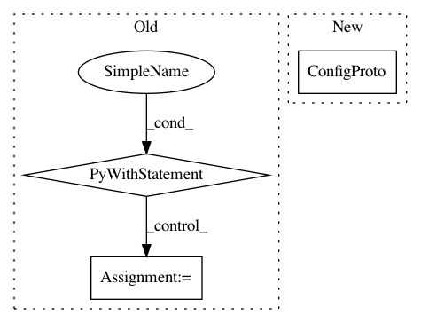

4197dd561f94b34a2b048825bc786dd9cb8318ee,preprocess-directory.py,,,#,28
Before Change
fname = filename.decode("ascii") + ".preprocess"
print("Saving ", fname)
output.tofile(fname)
with tf.device("/cpu:0"):
sess = tf.Session()
with tf.device("/cpu:0"):
channels = args.channels
crop = args.crop
width = args.width
After Change
print("Saving ", fname)
output.tofile(fname)
sess = tf.Session(config=tf.ConfigProto(log_device_placement=True))
channels = args.channels
crop = args.crop
width = args.width
In pattern: SUPERPATTERN
Frequency: 3
Non-data size: 3
Instances
Project Name: HyperGAN/HyperGAN
Commit Name: 4197dd561f94b34a2b048825bc786dd9cb8318ee
Time: 2016-07-13
Author: martyn@255bits.com
File Name: preprocess-directory.py
Class Name:
Method Name:
Project Name: reinforceio/tensorforce
Commit Name: 4af4e2c7226607c6e6c0d7f814085c45ccd92d4a
Time: 2017-02-22
Author: mi.schaarschmidt@gmail.com
File Name: tensorforce/execution/distributed_runner.py
Class Name:
Method Name: process_worker
Project Name: apple/coremltools
Commit Name: 40220c28a320d5fe351b893e256db48deb864d09
Time: 2020-07-17
Author: aseem.elec@gmail.com
File Name: coremltools/converters/mil/frontend/tensorflow/tf_graph_pass/constant_propagation.py
Class Name:
Method Name: _constant_propagation